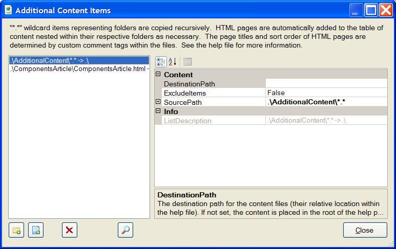

The Additional Content Property
The AdditonalContent property is similar in nature to the
NDoc properties AdditionalContentResourceDirectory,
FilesToInclude, RootPageFileName and
RootPageTOCName. However, the help builder's implementation
provides the following added benefits over NDoc:
- You can specify multiple entries consisting of wildcards or
individual filenames.
- For each entry, you can specify a specific target folder in the
help file project's compilation folder.
- "*.*" wildcard items representing folders are copied recursively.
The sub-folder layout is replicated below the target folder.
- All HTML files (*.htm and *.html) are automatically added to the
table of content. Sub-folders below the source folder containing HTML
files automatically create folder entries in the table of content. As
such, it is fairly simple to create a hierarchy of entries in the help file
table of content based on the folder structure of the additional content
items.
- The help file builder scans each HTML file for some special
comment tags. The comment tags can be used to indicate the default topic,
exclude a file from the table of content, and set the sort order of items
within the table of content group. These are described later.
- The help file builder will also scan the HTML files for XML comment
style
<see> tags and will replace them with links to the
appropriate help file content (i.e. methods, properties, etc). This is
described later.
- The
ExcludeItems option can be set to true on entries
to exclude a file or set of files from the additional content. For
wildcards, all files matching the wildcard in all sub-folders are also
excluded.
- Additional content entries can be placed at the top of the table of
content ahead of the namespace entries or at the bottom after the namespace
entries using the project-level
ContentPlacement property
described later.
- If no additional content is present or none is marked as the
default topic, the root namespaces page will be selected as the default
topic for the help file.
I believe that this implementation provides a great deal of flexibility and
finer control over the layout of the table of content and inclusion of
additional content. The following dialog box is used to add additional
content to the project. It is accessed by clicking the "..." button to the
right of the property when it is selected.

The list box on the left lists the additional content. The property grid
on the right lists the properties for the selected entry. The buttons below
the list box allow you to:
- Add a folder content item. This adds a wildcard source path that
will copy all content from the selected folder matching the wildcard. The
path can be absolute or relative. If relative, it is expected to be
relative to the project folder. For "*.*" wildcard entries, any
sub-folders are also copied to the target folder recursively. For more
specific wildcards such as "*.css", only files matching the wildcard are
copied, sub-folders are not.
- Add a single file content item. As with the folder content item,
the path can be absolute or relative and, if relative, its is expected to be
relative to the project folder.
- Delete a content item.
- Preview the table of content that will be generated for the
currently defined additional content items. The preview dialog box will
also allow you to rearrange the items and set the default topic. The
designer will use the current project folder as the base path for resolving
relative paths to the content items.